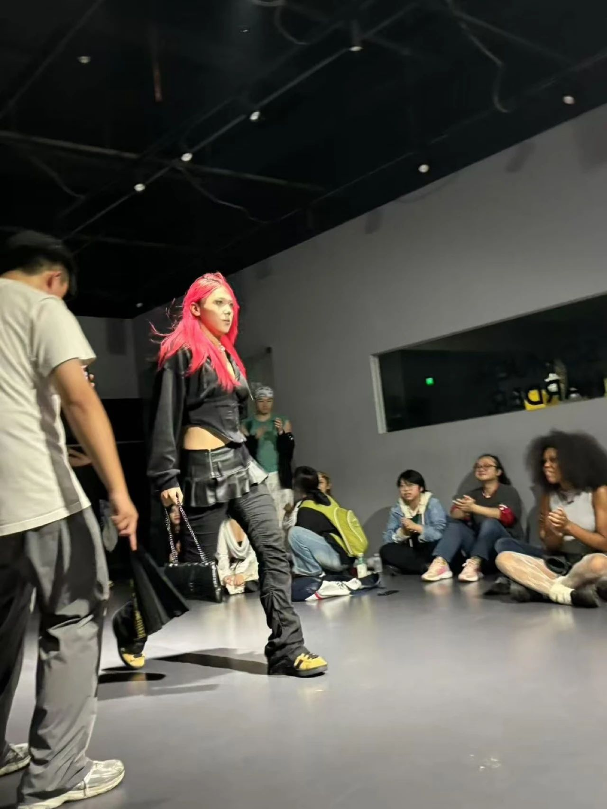
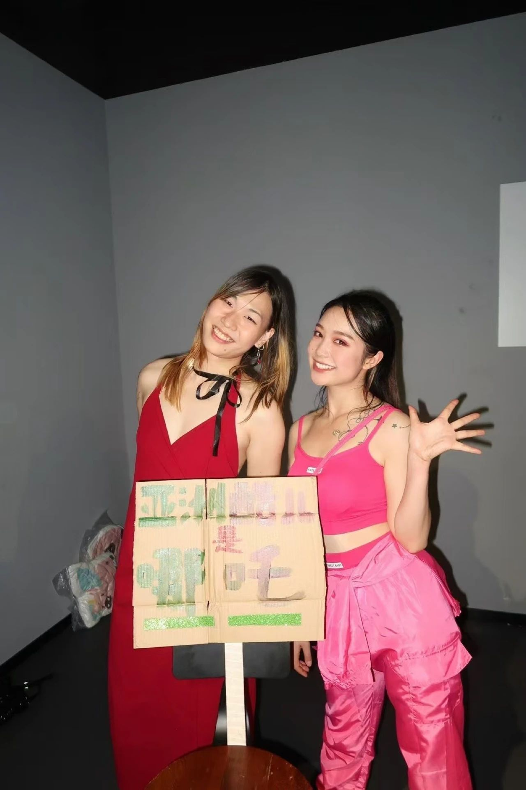
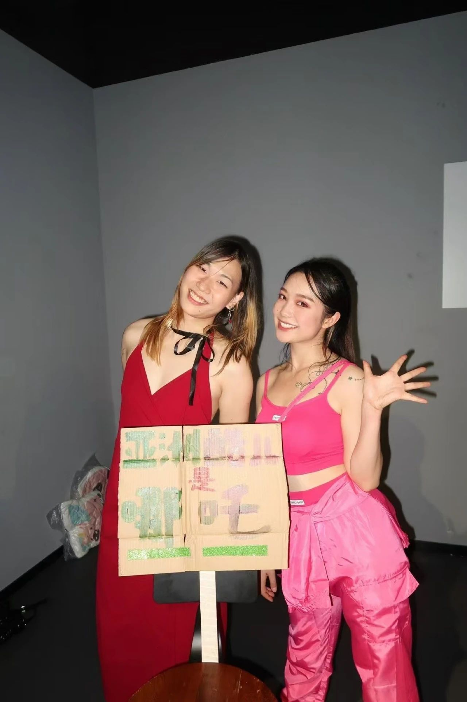
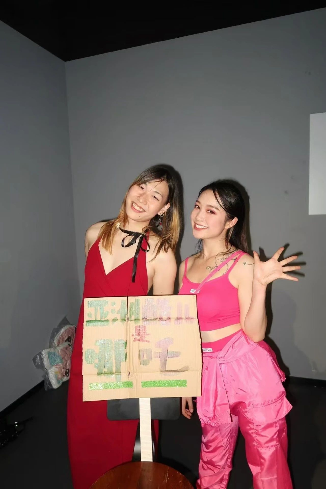

 



回顾｜10.20 “where do we go from here” Kiki
OTA Runway: Hatsumomo Fusion
OTA Performance: Father Daiki Fusion
体育生Realness: Aixy Juicy Couture
Dyke Out vs Fag Out: House of Fusion
Dyke Out：祎凡 007
Fag Out：House of Fusion
Bestie Realness：Qoox Nalakuvara & Kirby Nalakuvara
Genderfvck Imagination：Hatsumomo Fusion
感谢Daiki Fusion和Sunday Nalakuvara赞助的奖金和Carpo/跨儿美赞助的抱枕奖品❤️，以及谢谢大家宣传和到场，有感受到社群的爱，心里很暖。
谢谢Ahan Fusion和拿完realness GP就被我逮住的Aixy Juicy Couture来当judge
谢谢我的两个宝贝DJ Qoox & Kirby Nalakuvara，放音乐顺带还拿了个GP
最后爱送给B姐和CDC Soul Lover，如果没有BB跟我一起做，提供各种支持，这一切都不会发生我们一起继续办下去！
C U Next Time！！十一月见！